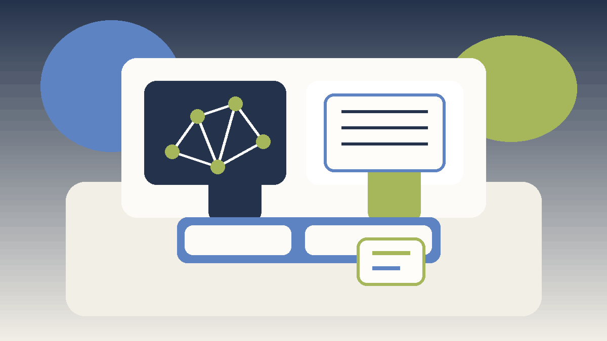

Introduction
Gameplay Strategic Thinking matters because strategic thinking shapes how readers interpret pressure, timing, and trade-offs inside competitive gameplay analysis. A page like this is most useful when it explains not only what to do, but why a choice becomes stronger or weaker as the situation changes.
This guide keeps the explanation practical. It shows how strategic thinking connects to information quality, decision framing, pattern reading, and disciplined review after play, where beginners usually misread the situation, and how to turn the idea into a repeatable habit.
The article is also written for human readability, not just keyword coverage. Instead of relying on thin summaries, it explains the reasoning behind stronger choices, the trade-offs behind weaker ones, and the kinds of examples readers can recognize from their own sessions.
Overview

What Is Strategic Thinking?
Strategic thinking is the practice of handling one important layer of competitive gameplay analysis in a more deliberate way. It becomes useful when players stop reacting only to the last move and start looking at context, options, and consequences. In practical terms, it helps readers judge when a line is solid, when it is thin, and when it only looks attractive on the surface.
A readable guide should make that judgment easier. It should show how the topic appears in ordinary positions, how it affects later decisions, and why small differences in context can change the best response.
1. Think Beyond the Immediate Move
Strategic thinking begins when readers stop judging a move only by what it does now. The stronger question is what it sets up next, what it weakens, and how it changes the future shape of the session.
What makes think beyond the immediate move strategically important is that it links the current choice to the next shape of the position. That wider lens helps readers stop chasing isolated gains and start building lines that remain useful after the immediate moment passes.
To make this useful in ordinary sessions, it helps to ask what think beyond the immediate move is trying to create two steps from now. If there is no clear answer, the line may be more reactive than strategic.
2. Link Small Choices to Larger Goals
Every local decision sits inside a larger goal. In competitive gameplay analysis, that larger goal might be steady point control, safer progress, partner support, or pressure timing. Clear goals make local choices easier.
What makes link small choices to larger goals strategically important is that it links the current choice to the next shape of the position. That wider lens helps readers stop chasing isolated gains and start building lines that remain useful after the immediate moment passes.
To make this useful in ordinary sessions, it helps to ask what link small choices to larger goals is trying to create two steps from now. If there is no clear answer, the line may be more reactive than strategic.
3. Use a Planning Horizon
Not every position needs deep forecasting, but most benefit from a short planning horizon. Looking one or two steps ahead is often enough to catch traps, missed value, or unnecessary exposure.
What makes use a planning horizon strategically important is that it links the current choice to the next shape of the position. That wider lens helps readers stop chasing isolated gains and start building lines that remain useful after the immediate moment passes.
To make this useful in ordinary sessions, it helps to ask what use a planning horizon is trying to create two steps from now. If there is no clear answer, the line may be more reactive than strategic.
4. Respect Trade-Offs in Planning
Strong plans do not eliminate trade-offs. They simply choose trade-offs that match the position. A reader should know what they are giving up when they pursue tempo, flexibility, or pressure.
What makes respect trade-offs in planning strategically important is that it links the current choice to the next shape of the position. That wider lens helps readers stop chasing isolated gains and start building lines that remain useful after the immediate moment passes.
To make this useful in ordinary sessions, it helps to ask what respect trade-offs in planning is trying to create two steps from now. If there is no clear answer, the line may be more reactive than strategic.
5. Leave Room to Adapt
Good strategy is not rigid. A practical plan leaves room for new information. The goal is to guide the next decisions without becoming so committed that updates feel impossible.
What makes leave room to adapt strategically important is that it links the current choice to the next shape of the position. That wider lens helps readers stop chasing isolated gains and start building lines that remain useful after the immediate moment passes.
To make this useful in ordinary sessions, it helps to ask what leave room to adapt is trying to create two steps from now. If there is no clear answer, the line may be more reactive than strategic.
6. Use the Opponent's Likely Story
Strategic thinking improves when readers ask what the opponent or table is likely trying to achieve. That question helps expose conflicts, timing windows, and places where a quiet interruption has more value than direct force.
What makes use the opponent's likely story strategically important is that it links the current choice to the next shape of the position. That wider lens helps readers stop chasing isolated gains and start building lines that remain useful after the immediate moment passes.
To make this useful in ordinary sessions, it helps to ask what use the opponent's likely story is trying to create two steps from now. If there is no clear answer, the line may be more reactive than strategic.
7. Measure Strategy by Repeatability
A useful strategic line should make sense over many sessions, not just in one dramatic example. Repeatable strategy usually looks calmer than highlight-play strategy, but it produces steadier results.
What makes measure strategy by repeatability strategically important is that it links the current choice to the next shape of the position. That wider lens helps readers stop chasing isolated gains and start building lines that remain useful after the immediate moment passes.
To make this useful in ordinary sessions, it helps to ask what measure strategy by repeatability is trying to create two steps from now. If there is no clear answer, the line may be more reactive than strategic.
8. Turn Strategy Into Reflection
The best way to improve strategic thinking is to review whether the plan matched the situation, whether it was updated when needed, and whether execution stayed aligned with the original goal.
What makes turn strategy into reflection strategically important is that it links the current choice to the next shape of the position. That wider lens helps readers stop chasing isolated gains and start building lines that remain useful after the immediate moment passes.
To make this useful in ordinary sessions, it helps to ask what turn strategy into reflection is trying to create two steps from now. If there is no clear answer, the line may be more reactive than strategic.
Common Mistakes
- Planning too rigidly and refusing to adapt when the context changes.
- Thinking several steps ahead without securing the current position first.
- Treating a single success as proof that the same line is always correct.
- Reacting to pressure before checking whether the position actually changed.
- Reviewing the outcome without reviewing the quality of the reasoning.
Summary
The most practical way to improve strategic thinking is to treat it as a repeatable habit rather than as a special trick. In competitive gameplay analysis, readers gain more from calm observation and consistent routines than from dramatic one-off plays. The strongest takeaway is to connect every idea back to context, trade-offs, and what the next decision will look like.
That balance is what keeps the page search-friendly without making it feel artificial. The keyword belongs in the article because it matches the topic, but the real value comes from clear reasoning, realistic examples, and language that a reader can stay with from beginning to end.